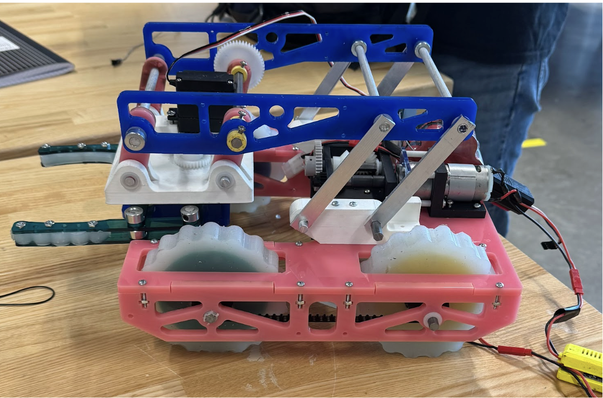
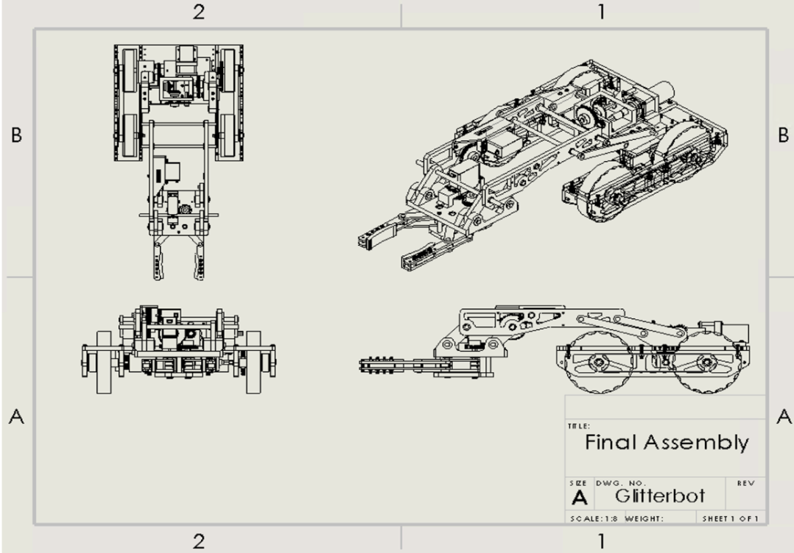

Harvard Turf Wars Robot
Competition robot focused on mechanical design and fabrication. Group Project.
Overview
The GlitterBot project involved designing and building a competitive robot for the “Turf Wars” challenge, where the robot needed to navigate ramps (15° and 30°), traverse terrain, and collect objects using a claw mechanism. The team focused on optimizing speed and mobility, implementing an all-wheel-drive system powered by a pulley-driven drivetrain, alongside a custom-designed extendable claw. I primarily worked to analyze the robot’s performance by doing physics calculations, including center of mass, torque requirements, and drivetrain efficiencies based on the design the team was considering. I also contributed to designing and making parts of the drivetrain through lasercutting, milling, and casting. Although the robot met all technical design requirements and won Best CAD Design, it faced mechanical and electrical failures during competition due to tolerancing issues. This project strengthened my skills in mechanical design considerations, CAD modeling, prototyping, and system-level problem solving, while emphasizing the importance of testing and reliability in engineering systems.
What I Worked On
- Designed parts in SolidWorks
- Created engineering drawings with GD&T
- Helped validate motor performance under load
- Fabricated and assembled robot components
Media

